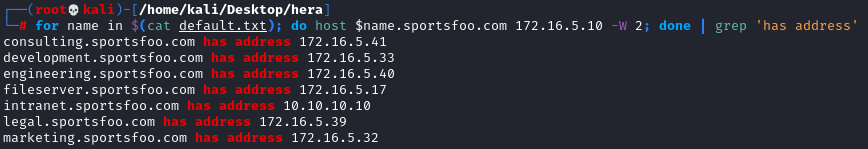
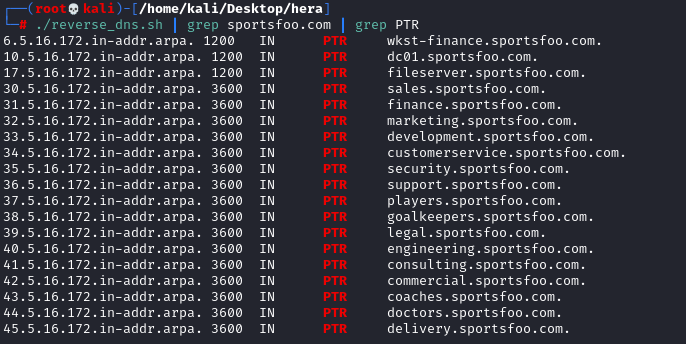
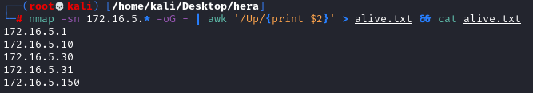

Host Discovery in the Internal Network with DNS
1. Forward DNS Lookup of possible Subdomains
Usually useful if we are in an internal network
If we have a Domain(with its ip address) and we
want to find the ip address of its possible subdomainsWe can
use a commands like this
wget https://raw.githubusercontent.com/mschwager/fierce/master/fierce/lists/default.txt
for subdomain in $(cat default.txt); do host $subdomain.[DOMAIN_FQDN] [DNS_IP_ADDRESS] -W 2; done | grep 'has address'
 ◇
nmap
nmap --dns-servers 172.16.5.10 --script dns-brute --script-args dns-brute.domain=sportsfoo.com
Wordlists:•
https://github.com/mschwager/fierce/tree/master/fierce/lists
◇ Default(1598 words):
https://raw.githubusercontent.com/mschwager/fierce/master/fierce/lists/default.txt
2. Reverse DNS Lookup of possible Ip address
From the the point 1 in this scenario we have discovered that there a lot of ip address in the range
172.16.5.0/24
Create a list of this possible ip address
seq -f "172.16.5.%g" 1 255 > iplist.txt
script to do a reverse dns lookup of these addresses:
File:
#!/bin/bash
for ip in $(cat iplist.txt); do dig @172.16.5.10 -x $ip +nocookie; done
enable execution:
execute it:
./reverse_dns.sh | grep sportsfoo.com | grep PTR
 ◇
nmap
dnsrecon -n 172.16.5.10 -r 172.16.5.1-172.16.5.99
3. Check which Hosts are alive
◇ nmap
This step with nmap is not related with the previous one
nmap -sn 172.16.5.* -oG - | awk '/Up/{print $2}' > alive.txt && cat alive.txt
